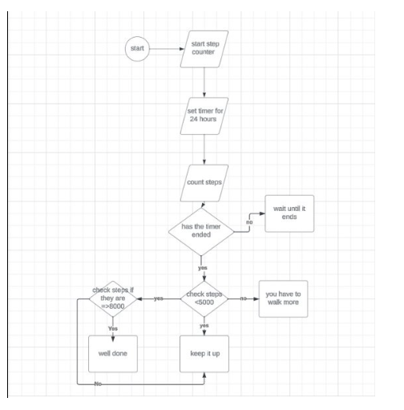
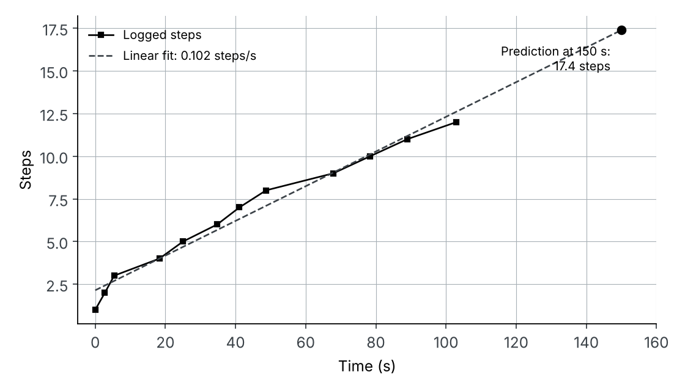
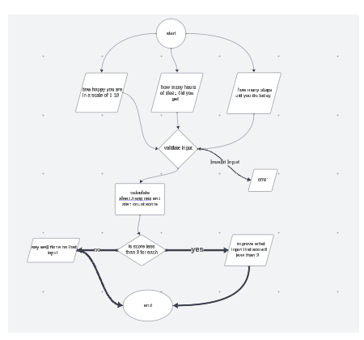
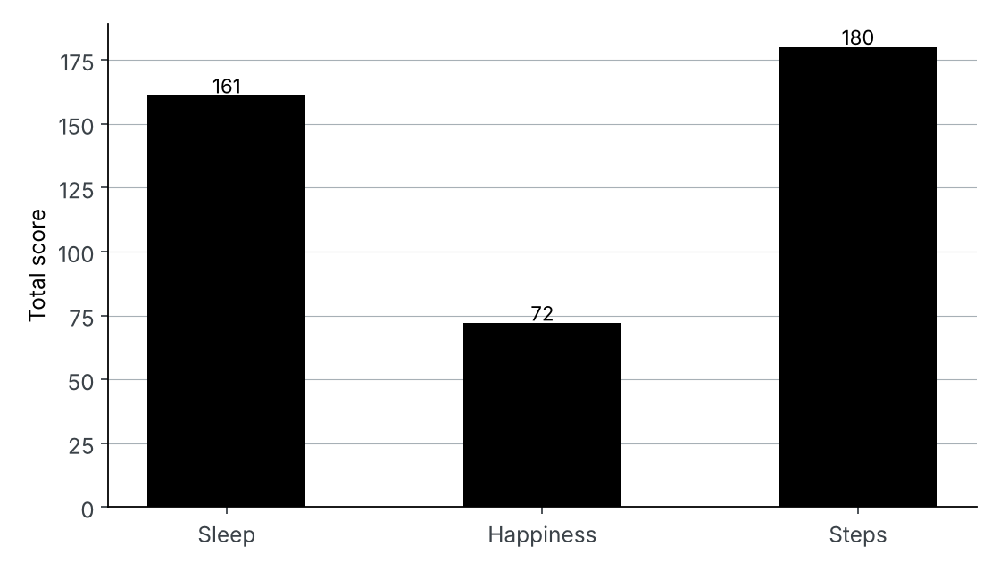

The brief
My Leaving Certificate Computer Science project brief asked for an embedded system that improves some part of wellbeing, plus a computer model that gives insight into it. Research showed the average person in Ireland takes about 5,444 steps a day against the 10,000 often recommended, and a survey of my class found most students walked around 6,000. So I built a step counter that encourages people to walk more, with a Python program that analyses the data and gives advice on sleep and mood as well.
The step counter
The micro:bit counts steps with its accelerometer over a 24-hour period. If the user reaches 5,000 steps it congratulates them; if not, it tells them to keep walking. It also sends each step with a timestamp to a laptop, where it is saved as a CSV file.

Analysing the data in Python
The Python program first validates the CSV, checking every row is in the right format before it is used. It then fits a straight line to steps against time with NumPy and uses it to predict the step count at a time the user enters. It also reports the minimum, maximum and average.

Wellbeing model
The second part asks how many hours the user slept, how many steps they took and how happy they feel from 1 to 10. It rejects impossible answers, scores each category, and gives advice: sleep more, do something you enjoy, or take a walk. The same scoring answers “what if” questions, for example how the score changes with an extra two hours of sleep. To test it on more data, I wrote a generator for random wellbeing datasets, and the program scores every entry and charts which category is weakest.




Looking back
Re-running the code for this page, I found a bug in the scoring: values just below the top band score zero (7–8 hours of sleep, happiness of 7–8, and 7,000–8,000 steps), because each check uses “less than” and “greater than” but nothing covers the range in between. That is part of why happiness looks so weak in Figure 4. Today I would close those gaps, weight sleep and happiness above step count, and test the edge cases properly.